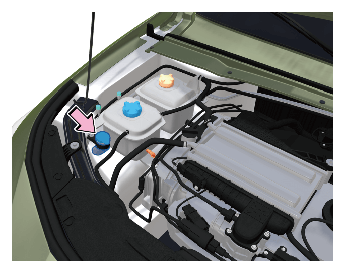

若发现洗涤液液位过低时，应及时向储液罐中添加洗涤液。
6.4.4 风窗洗涤液和雨刮器片
加注风窗洗涤液

更换前风窗雨刮片

– 将整车电源切换到“ON”挡位，再切换到“OFF”挡位。
–10s内拨刮水器组合开关至MIST挡，雨刮臂将运转半周后停止。

–抬起雨刮臂，按压锁止按键①，并沿-箭头-方向向上滑动雨刮片②即可拆下。
–将新雨刮片按照相反的步骤装回到雨刮臂，听到“咔嗒”声则安装到位。
–将雨刮臂轻轻地放回风窗玻璃上。
–将整车电源切换至“ON”挡位，雨刮臂将自动回位。
如需更换雨刮片，建议到广汽传祺特约店更换。
— 页面到底了 —